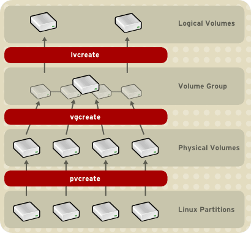
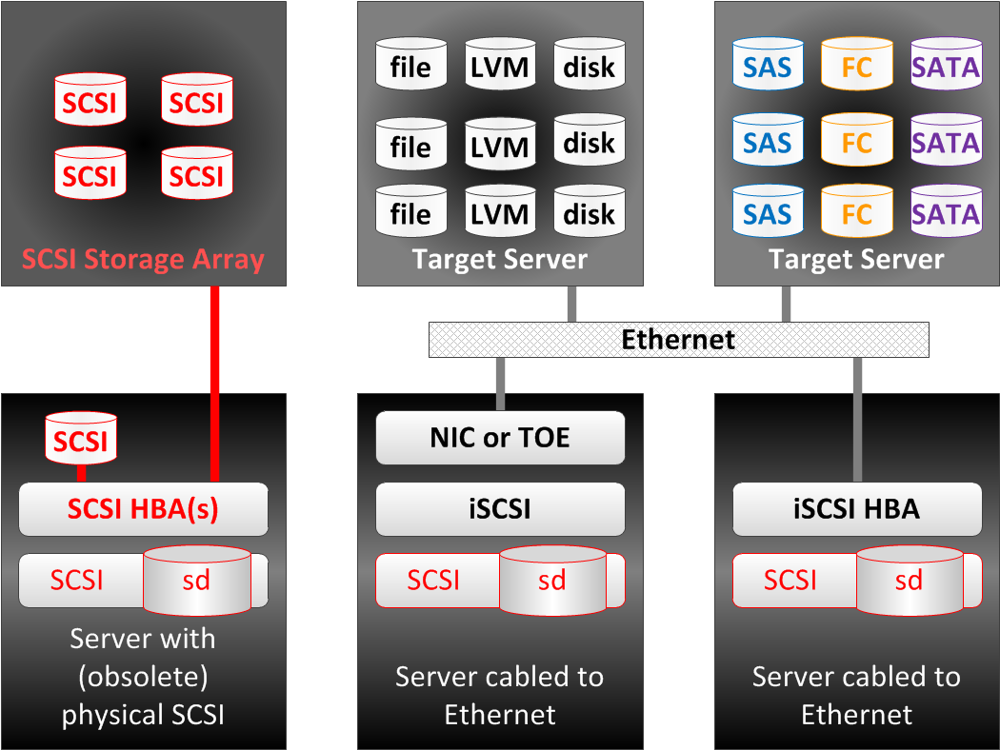
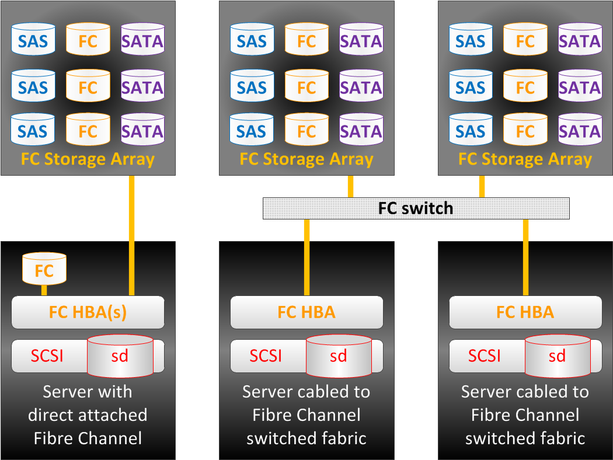
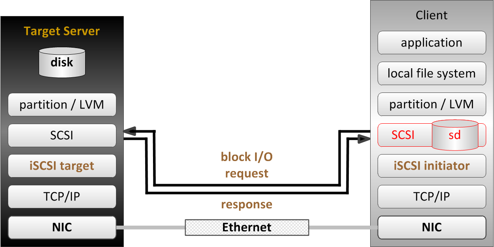
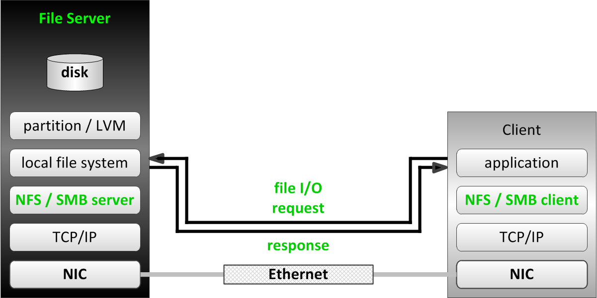

# du
# du -h存储
附件表
| 名称 | 定义 | 示例 |
|---|---|---|
文件系统 |
一个以树状结构组织的，位于存储设备(如物理磁盘，分区)上的保存数据的文件或文件夹。树状结构的根部是 |
查看某路径下磁盘使用情况 |
mounting |
添加一个新的树状结构文件系统到已知文件系统的过程叫 mounting。 |
|
mount point |
新文件系统添加的目录叫 mount point。 |
查看 mount points 和磁盘使用率 |
分区 |
硬盘或存储设备通常被分成较小的块，这些小块叫做分区。一个分区是对一个磁盘的划分，磁盘的不同块可以通过分区组织成不同的文件系统。 |
查看所有分区 |
块设备 |
Linux 中存储设备被一个特定文件格式所表示，叫做块设备。块设备通常保存在 |
查看物理机上块设备 查看虚拟机上块设备 输出所有块设备 |
LVM |
LVM 指逻辑卷管理(logical volume management)，LVM 用来管理磁盘和分区。 |
|
逻辑卷组 |
一个或多个块设备可聚合在一个存储池叫做逻辑圈组，名字是在创建时命名。 |
|
逻辑卷 |
一个逻辑卷相当于一个物理磁盘上的一个分区，物理磁盘可以分成多个逻辑卷，名字时在创建时命名。 |
| 操作名称 | 详细步骤 | 说明 |
|---|---|---|
创建一个 LV |
创建一个 LV 需要 5 个步骤：
|
|
删除一个 LV |
删除一个 LV 需要 4 个步骤:
|
|
扩展一个 LV |
扩展一个 LV 需要 5 个步骤:
|
|
LVM 组件层次图

-
PV - PHYSICAL VOLUME，物理卷。LVM 逻辑卷的底层物理存储单元是一个块设备,比如一个分区或整个磁盘。要在 LVM 逻辑卷中使用该设备，则必须将该设备初始化为物理卷(PV)。
-
VG - VOLUME GROUP，卷组。多个物理卷合并成一个磁盘空间池称为卷组（VG），并可使用它分配逻辑卷。在卷组中,可用来分配的磁盘空间被分为固定大小的单元,我们称之为扩展。扩展是可进行分配的最小空间单元。在物理卷中,扩展指的是物理扩展。逻辑卷会被分配成与物理卷扩展相同大小的逻辑扩展。因此卷组中逻辑卷的扩展大小都是一样的。卷组将逻辑扩展与物理扩展匹配。
-
LV - LOGICAL VOLUME，逻辑卷，LVM 中是将卷组分为逻辑卷。逻辑卷有不同类型：线性卷（Linear Volume）、条带逻辑卷（Striped Logical Volume）、RAID 逻辑卷（RAID Logical Volume）、精简配置逻辑卷（Thinly-Provisioned Logical Volume）、快照卷（Snapshot Volume）、精简配置快照卷（Thinly-Provisioned Snapshot Volume）、缓存卷（Cache Volume）
iSCSI
iSCSI（Internet Small Computer System Interface）是一个基于 TCP/IP 的协议，用于通过 IP 网络仿真 SCSI 高性能本地存储总线，从而为远程块存储设备提供数据传输和管理。作为 SAN(Storage Area Network) 协议，iSCSI 跨本地和广域网络（LAN、WAN 以及 Internet）扩展 SAN，通过分布式服务器和数组提供独立于位置的数据存储检索。
SCSI 和 iSCSI 块存储拓扑

SCSI 协议套件提供基于设备总线通信协议的命令描述器块 (CDB) 命令集。对于每个通道的所有设备（电缆总线），原始 SCSI 拓扑使用长度限制为 20 米的物理布线。设备使用唯一数字目标 ID（0 到 7，对于双通道则为 0 到 15）。广泛实施的光纤通道 (FC) 已淘汰了物理 SCSI 磁盘和布线，FC 保留了 SCSI 的 CDB 命令集，但是将磁盘和总线通信更换为协议以便进行更长且速度更快的光纤布线。
iSCSI 协议还保留了 CDB 命令集，在通过标准 TCP/IP 封装的 iSCSI 系统之间执行总线通信。iSCSI 服务器使用文件、逻辑卷或任何类型的磁盘作为底层存储（后备储存）来仿真呈现为目标的 SCSI 设备。iSCSI 服务通常在层次高于操作系统 TCP/IP 堆栈或 TCP 卸载引擎 (TOE)（一个专用的以太网网络接口卡 (NIC)，包括 TCP/IP 网络层以提高性能）的软件中实施。iSCSI 还可以作为主机总线适配器 (HBA) 以硬件方式实施，以更大地提高性能。
企业级 SAN 需要专用的流量基础架构。FC 的独立光纤布线和交换机保证了隔离。iSCSI 应该在独立于标准 LAN 流量的布线中实施，因为性能可能会由于共享网络上的带宽拥塞而降级。以太网和 FC 现在均提供铜缆和光缆布线选项，允许网络整合与流量分类组合使用。
存储区域网络流量通常是未加密的，因为物理服务器到存储器的布线通常密封在安全的数据中心内。对于 WAN 安全性，iSCSI 和以太网光纤通道 (FCoE) 可以利用互联网协议安全性 (IPSec)，这是一个用于保护 IP 网络流量的协议套件。选择可以提供加密的联网硬件（首选 NIC、TOE 和 HBA）。iSCSI 提供质询握手身份验证协议 (CHAP) 用户名和密码作为身份验证机制，以限制所选启动器和目标之间的连接。
直到最近，iSCSI 才不被视为企业级存储选项，主要是因为与 FC 和 1 Gb/s 和 4 Gb/s 光纤基础架构相比，其使用了较慢的 100 Mb/s 和 1000 Mb/s 以太网。通过目前的 10/40 Gb/s 以太网和 8/10/16/20 Gb/s FC 以及即将实现的 100 Gb/s 以太网和 32/128 Gb/s FC，带宽可用性现在对于两者来说很相似。
光纤通道块存储拓扑

iSCSI 的使用使 SAN 摆脱了本地布线的限制，促进了本地或远程数据中心中的存储整合。由于 iSCSI 结构是逻辑性的，因此，将仅使用软件配置来进行新的存储分配，而无需其他电缆或物理磁盘。iSCSI 还使用多个远程数据中心简化了数据复制、迁移和灾难恢复。
iSCSI 协议的运行方式类似于客户端-服务器配置。客户端系统将启动器软件配置为将 SCSI 命令发送到远程服务器存储目标。访问的 iSCSI 目标在客户端系统上显示为本地且未格式化的 SCSI 块设备，等同于通过 SCSI 布线、FC 直连或 FC 交换光纤连接的设备。
| 术语 | 描述 |
|---|---|
启动器 |
一个 iSCSI 客户端，通常以软件提供，但是也可以作为 iSCSI HBA 来实施。必须为启动器授予唯一名称（请参见 IQN） |
目标 |
一个 iSCSI 存储资源，针对来自 iSCSI 服务器的连接而配置。必须为目标授予唯一名称（请参见 IQN）。目标提供一个或多个带有编号的块设备，称为逻辑单元（请参见 LUN）。一个 iSCSI 服务器可以同时提供多个目标。 |
ACL |
访问权限控制列表（条目），一种使用节点 IQN（通常是 iSCSI 启动器名称）来验证启动器的访问权限的访问限制。 |
发现 |
查询目标服务器以列出配置的目标。目标使用要求其他的访问步骤（请参见 login） |
IQN |
iSCSI 限定名称，一个全球唯一名称，用于以强制命名格式来识别启动器和目标：iqn.YYYY-MM.com.reversed.domain[:optional_string]，iqn - 表示此名称将使用域作为其标识符；YYYY-MM - 拥有域名的第一个月；com.reversed.domain - 此 iSCSI 名称的创建组织的逆向域名；optional_string - 以冒号为前缀的可选字符串，由域所有者根据需要进行分配，但也是全球唯一的。它可以包含冒号以分隔组织边界 |
登录 |
向目标或 LUN 进行身份验证以开始使用客户端块设备 |
LUN |
逻辑单元号，带有编号的块设备，连接到目标并且通过目标来使用。可以有一个或多个 LUN 连接到单个目标，但通常一个目标仅提供一个 LUN |
节点 |
任何 iSCSI 启动器或 iSCSI 目标，由其 IQN 来标识 |
门户 |
目标或启动器上用于建立连接的 IP 地址和端口。一些 iSCSI 实施将门户和节点互换使用 |
TPG |
目标门户组，某个特定 iSCSI 目标将要侦听的接口 IP 地址和 TCP 端口的集合。可以将目标配置（例如 ACL）添加到 TPG 以协调多个 LUN 的设置 |
iSCSI 使用 ACL 来执行 LUN 屏蔽，从而管理相应目标和 LUN 对启动器的可访问性。还可以使用 CHAP 身份验证来限制对目标的访问权限。在使用设备全球编号 (WWN) 进行软区域划分管理限制方面，iSCSI ACL 与 FC 类似。尽管 FC 交换级别强制端口限制（硬区域划分）没有任何可比较的 iSCSI 机制，但以太网 VLAN 可以提供类似的隔离安全性。
与本地块设备不同的是，iSCSI 网络访问块设备可通过众多远程启动器发现。典型的本地文件系统（如 ext4、XFS 和 btrfs）不支持同时多系统挂载，这会导致严重的文件系统损坏。集群系统利用全局文件系统 (GFS2) 解决多系统访问权限，其旨在提供分布式文件锁定和并发多节点文件系统挂载。
块 I/O 网络堆栈组件

连接的 iSCSI 块设备显示为本地 SCSI 块设备 (sdx) 以在本地文件系统、交换空间或原始数据库安装中使用（如前图中所示）。请参阅以下部分以对比网络文件服务器协议（如 NFS 和 SMB）的使用，这些协议同时在多个客户端系统上提供从远程文件系统到本地应用程序的文件 I/O。
文件 I/O 网络堆栈组件

磁盘拷贝
dd 执行磁盘拷贝
$ sudo dd if=/dev/sdb of=~/Desktop/my_usb.img bs=8G